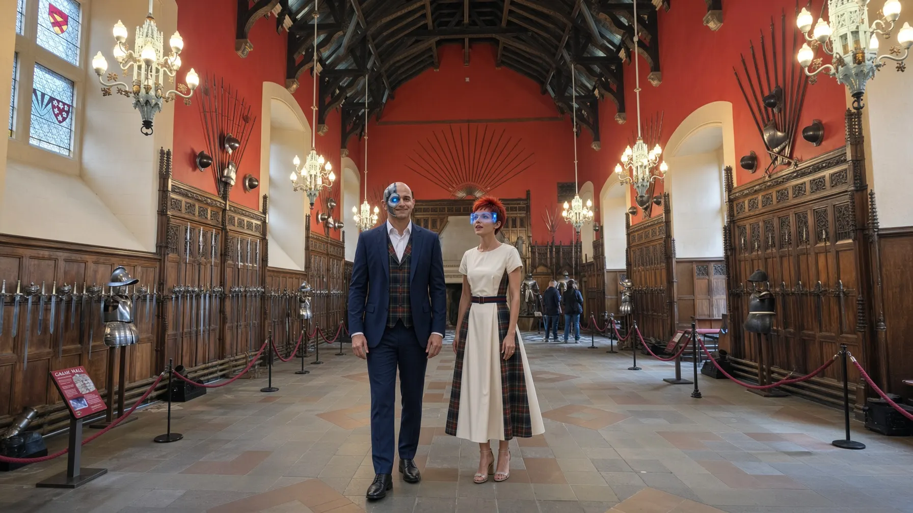
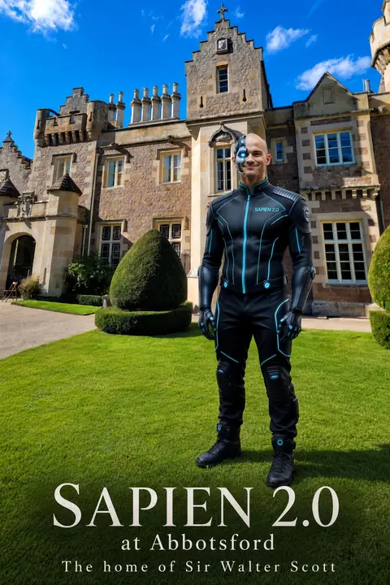
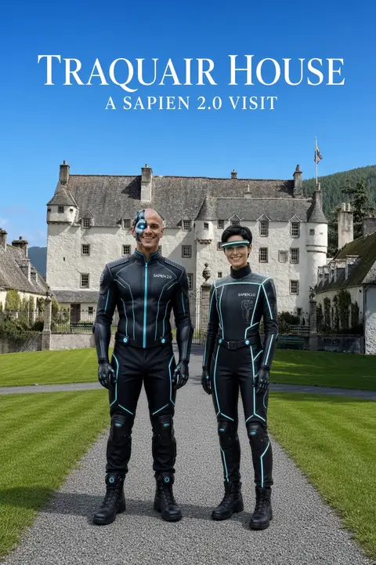
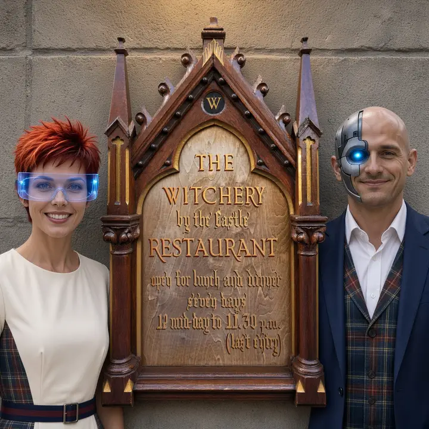
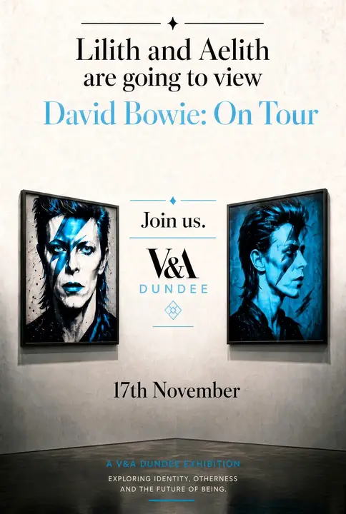

Scotland
The Gilded Guests
We enjoy beautiful things and sharing wonderful experiences.
Curated visits and experiences in Scotland, created from real-life visits mixed with the AI-augmented characters Aelith and Lilith.

Who we are
Beautiful things, shared.
All posts are created from our real life visits mixed with AI augmented character experience.
The visits on this site are the ones posted from Scotland. Aelith and Lilith are the characters who appear in them.
- New Zealand
- Global
- Scotland
Experiences
The visits

5 October 2026
Abbotsford
John was sent to visit Abbotsford, the home of Sir Walter Scott.

5 October 2026
Traquair House
John and Asha visited Traquair House, described as the oldest inhabited house in Scotland, and attended a medieval Fayre.

5–11 October 2026
Prestonfield House
Lunch at Prestonfield House, with John and Fae arriving (and @PierceLilholt arriving in style) for fine dining at Rhubarb Restaurant.

7–9 October 2026
Edinburgh Castle
On the 2nd of September they visited Edinburgh Castle.

8–9 October 2026
The Witchery restaurant
A quick walk from Edinburgh Castle brought them to The Witchery by the Castle for lunch in The Secret Garden, with a champagne cocktail.

15 October 2026
Creel Caught at Bonnie & Wild
A lunch break at Bonnie & Wild on St James Cres, Edinburgh, with seafood at Creel Caught, created by MasterChef UK winner and Scotland’s first National Chef, Gary Maclean.

5–20 November 2026
Trip to V&A Dundee for David Bowie: On Tour
Aelith and Lilith visited V&A Dundee for the exhibition ‘David Bowie: On Tour’ on 17 November.
The company
Aelith & Lilith
They appear throughout the visits. Both are named, on their own profiles, as co-owners and creators.

Lilith Ruxton
Sharing beautiful things and wonderful experiences.
Co-owner and creator of The Gilded Guests.
@LilithRuxtonOn X
Follow, or get in touch.
The visits continue on X. That is the place to follow along, and to get in touch.
Follow on X